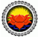

Sarvodaya Sri lanka


VISION
Our vision is a world of communities based on non-violence, service, and cooperation.
MITION
Our mission is to facilitate individual and community development to meet basic human needs, reduce material, social and spiritual poverty, and enhance the quality of life for all.
CAPASITY
We have nationaly and internationaly resources, volunteers, donators, island wide bank system, many organizations for help rural peoples.
NEWS LINE
Upcoming projects
Realizing the democratic changes by connecting the trained community monitoring teams with the newly established democratic institutions, processes of Independent Commissions and Transitional Justice (TJ) in Sri LankaUpcoming projects
This aims to create awareness and education needed to enhance the constitution literacy among the people. And the goal of the proposed project is to create awareness and education needed to enhance the constitution literacy among the people in both North and the South of Sri Lanka, so that the people fully understand the constitutional reform process, and are supportive of its adoption and implementation in the aftermath to create an inclusive Sri Lankan identity.Upcoming projects
Addressing significant gaps in knowledge and understanding on the significance of Right To Information (RTI) act which was adopted by Sri Lankan Government in August 2016, among the public.Project Manager(Vacancies)
He/She should have the suitable degree in media related field and having minimum of 1 year proven experience of technical writing, reporting, documentation and data entry with excellent PC/Database skills and knowledge, strong organizational, interpersonal / cross-cultural communication,and time-management skills with strong English oral and written communication skills.Recent Gallery
Rural Childrens

Saport for school
Staff